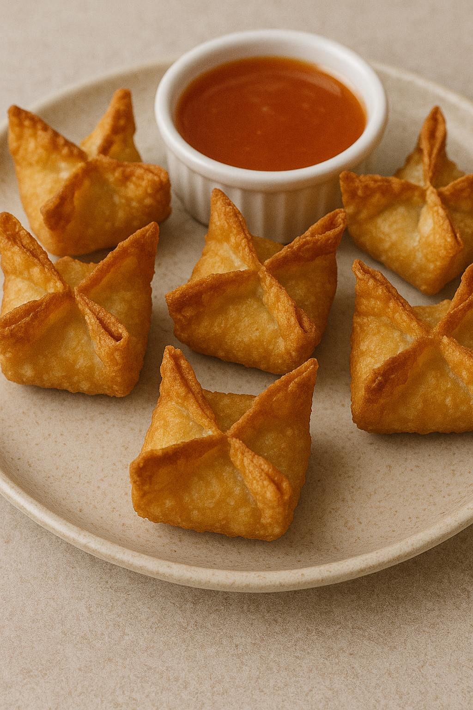

Crab Rangoons

Crispy wontons filled with creamy crab and green onion.
Yield: 18 crab rangoons |
Prep Time: 20 minutes |
Cook Time: 2–3 minutes per batch
Crab Rangoon Ingredients
- 5 ounces crab meat, drained
- 4 ounces cream cheese, softened
- 1 green onion, finely sliced
- 1 teaspoon Worcestershire sauce
- 1 teaspoon soy sauce (optional)
- ½ teaspoon garlic powder
- 18 wonton wrappers
- Oil for frying
Directions
- Preheat about 1 inch of oil in a pot to 325°F (163°C).
- In a bowl, combine crab meat, cream cheese, green onion, Worcestershire sauce, soy sauce (if using),
and garlic powder.
- Lay out several wonton wrappers at a time. Place 2 teaspoons of filling in the center of each.
- Dab edges with water, fold into a triangle, then bring the corners together and pinch to seal.
- Fry in batches for 2–3 minutes, until golden and crisp. Drain on paper towels and serve hot.